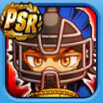

イベキャラ データ
[キャプテン]御幸一也 評価・イベントまとめ
読み：[きゃぷてん]みゆきかずや
[キャプテン]御幸一也の基本情報
| 得意練習 | 肩力 / 筋力 |
|---|---|
| イベント前後 | 後 |
| 基礎上限 | 肩力上限：10 |
| 野手金特 | 球界の頭脳＋読心術 広角砲＋読心術 大番狂わせ |
| 投手金特 | 意気揚々 |
| 友情特殊能力 | なし |
| 練習改革 | なし |
| アイテム追加枠 | なし |
[キャプテン]御幸一也の重要ボーナス
| コツイベントボーナス | 210%⇒230%(Lv50) |
|---|---|
| 試合経験点ボーナス | 35%⇒40%(PSR42)⇒45%(Lv45) |
| 筋力ボーナス | 26 |
| 技術ボーナス | 6(固有) |
| 肩力上限アップ | 10 |
その他ボーナスはこちらをタップ
| 初期評価 | 60(SR) 70(PSR) |
|---|---|
| コツイベント率アップ | 60% |
| 得意練習率アップ | +α(固有) |
| スペシャルタッグボーナス | 60%⇒80%(SR37)⇒100%(Lv40) |
| 練習効果アップ | 20% |
| 肩力のコツ | 3 |
| コツレベルボーナス | 2 |
[キャプテン]御幸一也のイベント詳細
金特イベント 最高のピッチングのために[複]、御幸塾[複]
・1回目
| ＋ | |
|---|---|
| それにしても言い方があるだろ （イベント終了） | 御幸評価+5 筋力+ 技術++ 精神+++ |
| えらいな、御幸は （イベント継続） | 御幸評価+5 筋力+ 敏捷(変化球)+ 技術++ |
| あとでフォローしとくよ （イベント終了） | 御幸評価+5 筋力+ 敏捷++ 技術+++ |
・2回目
| ＋ | その他 | |
|---|---|---|
| もっと聞きたい （イベント継続） | 御幸評価+5 技術+++ やる気+ | 【野手】 冷静 【投手】 要所〇 |
| オレはオレの道を行く！ （イベント終了） | 御幸評価+5 筋力+++ 精神+++ やる気+ | 【野手】 大番狂わせ 【投手】 力押し |
・3回目
| ＋ | その他 |
|---|---|
筋力++ 敏捷(変化球)++ 技術++++ 精神++++ | 【捕手】 球界の頭脳 読心術 【捕手以外の野手】 広角砲 読心術 【投手】 意気揚々 |
共通イベント
・自己紹介
| ＋ |
|---|
御幸評価+5 技術+ |
・ここ一番の男[複] 1回目
| ＋ |
|---|
敏捷(変化球)++ 技術++ |
・ここ一番の男[複] 2回目
| ＋ | その他 |
|---|---|
筋力+ 敏捷++ 技術+ 精神+ | 【野手】 満塁男 【投手】 対ピンチ |
・肩の力を抜け
| ＋ | その他 | |
|---|---|---|
| 笑ってみる | 技術++ | 【野手】 送球 【投手】 ノビ |
| 歯を食いしばる | 体力最大値+4 筋力++++ 精神++++ 体力- |
[キャプテン]御幸一也のコンボイベント
チームの柱
| コンボキャラ | 御幸一也、 |
|---|---|
| イベント前後 | 前 |
| ＋ | その他 | |
|---|---|---|
| いいから休め | 御幸評価+5 白州評価+10 筋力++ 技術++ 敏捷(変化球)++ | ケガしにくさ |
| 本当に大丈夫なんだな？ | 御幸評価+10 白州評価+5 精神++++++ | 【野手】 連打〇 【投手】 闘志 |
生意気な後輩
| コンボキャラ | 御幸一也、 |
|---|---|
| イベント前後 | 後 |
| ＋ | その他 | |
|---|---|---|
| 奥村を注意する | 筋力++++ | 【野手】 リベンジ 【投手】 根性〇 |
| 様子を見る | 体力+ 精神++ やる気+ | |
| 仲を取り持つ | 御幸評価+5 奥村評価+5 技術++ 精神++ | 【野手】 接戦〇 【投手】 緩急〇 |
２人の共通項
| コンボキャラ | 御幸一也、 |
|---|---|
| イベント前後 | 後 |
| ＋ | その他 | |
|---|---|---|
| 友達が少ない！ | 筋力+ 技術+ 精神+ | 【野手】 逆境〇 【投手】 重い球 |
| ヒッティングマーチがかっこいい！ | 体力++ 御幸評価+5 倉持評価+5 やる気++ 人気者取得 | |
| イケメンだ！ | 体力- 筋力+++ 敏捷(変化球)+ | ケガしにくさ |
[キャプテン]御幸一也の評価
【長所】
・球界の頭脳を獲得可能。捕手で査定が非常に高い。
・PSR50でコツボナ230%、試合経験点45%と全キャラの中でも非常に高水準なボーナスなので、捕手以外でもテンプレ入り可能な性能となっている。
Lv35でもコツボナ210%、試合経験点35%あり、上限開放しなくてもそれなりの性能になっている。
・肩力上限10持ち。捕手の他、三塁手と遊撃手でも恩恵がある。
・基礎ボーナス合計32あり、次期環境での活躍も期待できる。
【短所】
・なし
【記入日2026/11/07】
[キャプテン]御幸一也の使用デッキ例


[キャプテン]御幸一也の選手能力
| 選手ランク | S3120 |
|---|---|
| メインポジション | 捕 |
| サブポジション | なし |
| 利き腕 | 右投左打 |
野手能力
弾道3
ミートB75
パワーA80
走力D55
肩力A80
守備力B75
捕球S90
野手特殊能力
チャンス◎球界の頭脳ストライク送球アベレージヒッター悪球打ち大番狂わせ対エース○不動の四番